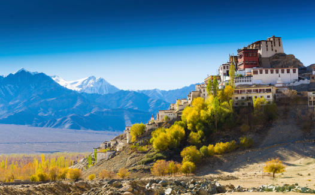
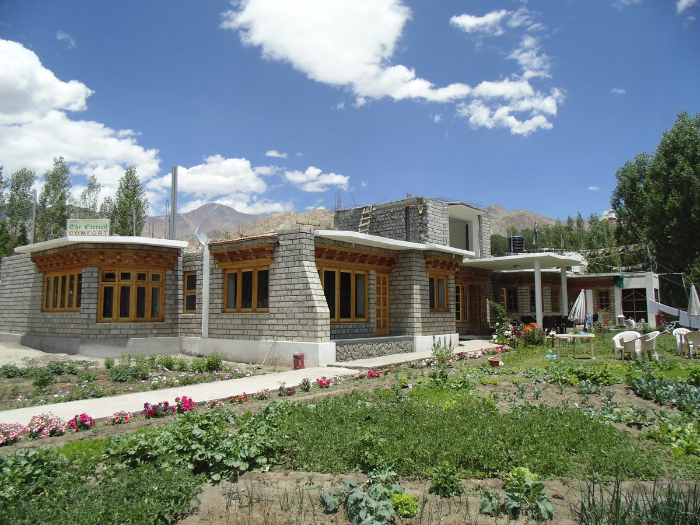

LadakhLadakh is a union territory in the Kashmir region of India. Formerly falling in the state of Jammu & Kashmir, Ladakh was administered a union territory on 31st October 2019. Extending from the Siachen Glacier to the main Great Himalayas, Ladakh is a land like no other. Dominated by dramatic landscapes, Ladakh is known as the world's coldest desert.Ladakh is an adventure playground for rafting and high-altitude trekking. Note that Leh Ladakh is inaccessible by road outside the summer months. The route passes close altogether from around October to May, and the only way to reach is by air. Chadar trek on frozen Zanskar river takes place in January to the end of February. |
 |
|  |
HotelAdu's Eternal Comfort Featuring a shared lounge, garden and views of garden, Adu's Eternal Comfort is located in Leh, 1 km from Main Bazaar. Among the facilities of this property are a restaurant, a 24-hour front desk and a shared kitchen, along with free WiFi throughout the property. The accommodation provides room service, a tour desk and luggage storage for guests. At the hotel, each room includes a wardrobe, a flat-screen TV, a private bathroom, bed linen and towels. Continental and buffet breakfast options are available daily at Adu's Eternal Comfort. The accommodation offers a terrace. Shanti Stupa is 3.5 km from Adu's Eternal Comfort, while Soma Gompa is less than 1 km away. The nearest airport is Kushok Bakula Rimpochee Airport, 10 km from the hotel. +91 9622979972Google Maps |